01-Transformer 架构详解:以 LLaMA 为例
TL; DR：从原版 Transformer 出发，串到 decoder-only 的工业界代表 LLaMA（Pre-Norm RMSNorm / SwiGLU / RoPE），并附一个极简 mini-LLaMA 手写实现。
-
[可能会考的面试手写题]：FFN ｜ MLP ｜ 直接手写一个完整 Transformer（真遇到过 😠 ）
前言
Transformer 在 MLSys 相关面试中，已经成为了"过年的饺子"，被问到的概率极高。当然，也可能因为太基础而被跳过。但作为众多知识点的基石，熟悉 Transformer 是必不可少的——谁知道哪天面试官会让你手写一个 Transformer 呢？
因此，我的自学笔记就从 Transformer 开始，以下内容是我当年从一个"半小白"的视角重新梳理和学习的过程，并结合自己的理解进行总结，欢迎指正。
1. 相关概念
首先需要理解这些概念：
- 核心机制：Self Attention、Multi-head Attention
- 辅助模块：Word Embedding、Position Encoding、Add（残差连接）、Norm（Layer/Batch）、Feed Forward Network（FFN）、Softmax
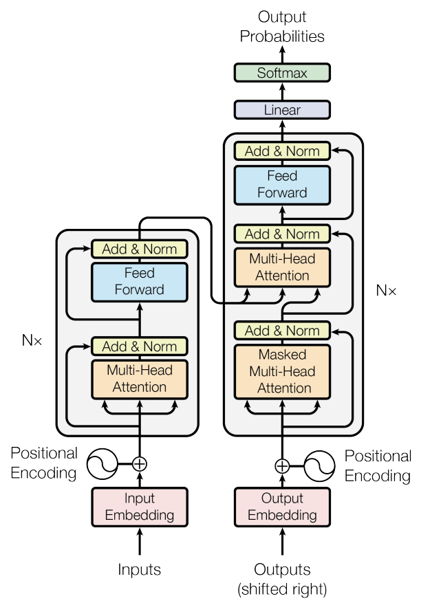
1.1 词嵌入 Embedding
Embedding的概念
文本嵌入（Text Embedding）是将文本转换为固定维度的向量表示（例如 512 维）。简单来说，它是通过映射，将不同的词关联在一起，使得模型具备一定的语义理解和推理能力。例如：
queen（皇后）= king（国王）- man（男人）+ woman（女人）
这个embedding矩阵的初始化通常采用一些初始化方法。假设一个包含 4 个单词的输入序列 \((x^1, x^2, x^3, x^4)\)，在经过 Embedding 处理后，会变成形状为 [4, 512] 的向量矩阵，即\((a^1, a^2, a^3, a^4)\)。
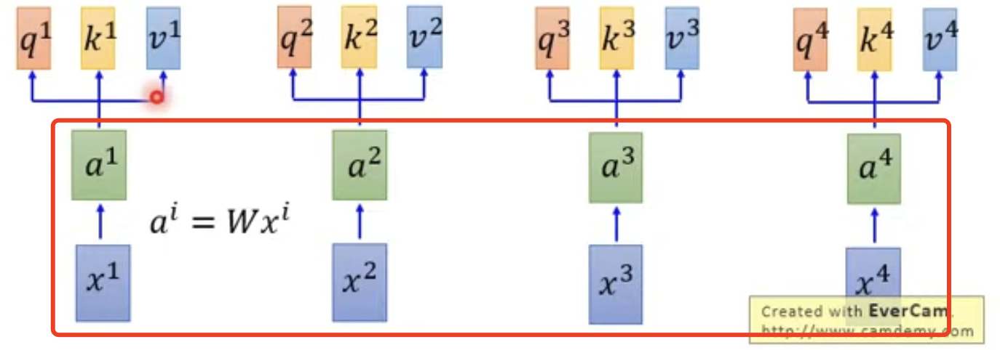
目前已有许多成熟的词嵌入方法，如 Word2Vec，可以直接使用。通常初始化方式包括 one-hot 编码、预训练词向量（如 Word2Vec、GloVe），而在 Transformer 中，Embedding 输出通常为形状 [batch_size, seq_len, embedding_dim]。
位置编码 Position Encoding
一个句子中单词的顺序很重要，如果位置并不影响结果这合理吗？
当然不合理！所以在进入attention前，最好也对单词在句子中的位置也加上考量，这就是位置编码 Position Encoding。
有很多种现有的策略可参考，常见的位置编码策略包括正弦和余弦函数编码，Transformer 论文中采用了三角函数形式的编码方式：
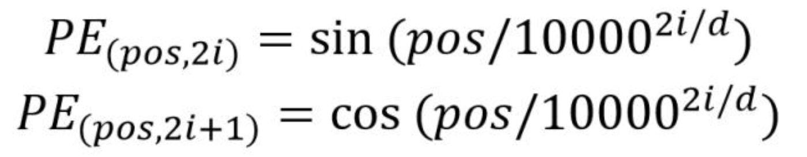
在 Transformer 的输入处理过程中，最终的单词表示向量由 词嵌入（Word Embedding） 和 位置编码（Position Encoding） 相加，即：
输入向量 = 初始化 Word Embedding + 位置编码 Position Embedding
1.1 注意力机制 Self-Attention
在处理序列数据时，传统方法如 RNN 由于顺序计算的特性，难以并行加速，计算效率较低。
Self-Attention 通过以下方式改进了这一点：
- 全局计算（All-to-All）：不再按照顺序处理，而是计算所有 Token 之间的关系。
- 矩阵乘法优化：通过矩阵分块计算，使得 Attention 机制可以高效地适配分布式计算与底层加速（如 GPU）。
此处简单理解一下推理过程：
Step 1: 理解QKV
QKV的实际含义理解起来很简单。QKV 的概念可以类比为 Key-Value 数据结构 或数据库的索引机制：
- Query（Q）：类似于数据库查询，表示当前 Token 需要关注的内容。
- Key（K）- Value（V）：类似于数据库的索引和值，对应于整个输入序列的表示。
QKV是怎么得到的？
QKV 的初始化通常使用 Xavier 初始化或正态分布，并在训练过程中不断优化
Step 2: Q, K 操作
首先以第一个output token \(b_1\)的计算为例：
-
\(b_1\) 的实际意义来源于 \(a_1\) 和 \(a_2,a_3,a_4\) 之间的关联。
-
因此我们需要用 \(q_1\) 和 \(k_2,k_3,k_4\) 进行匹配计算注意力分数。
- \(d\) 是之前的embedding纬度度，除以 \(\sqrt(d)\)是为了避免数值过大影响计算。
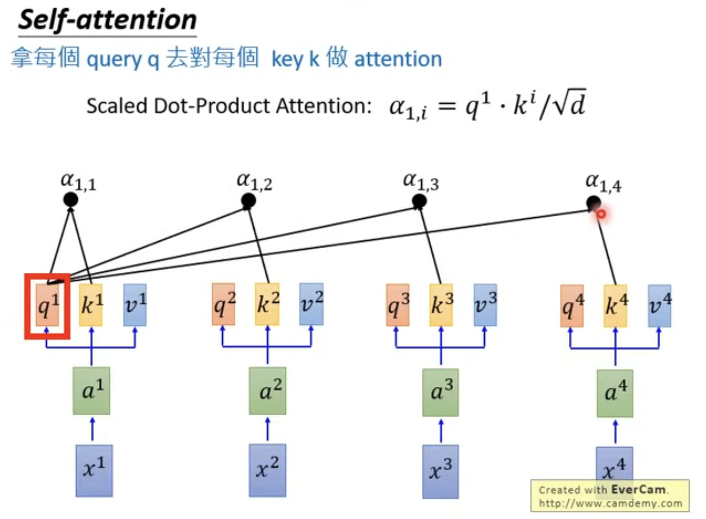
随后对它们进行一个softmax标准化，使得概率和为1。
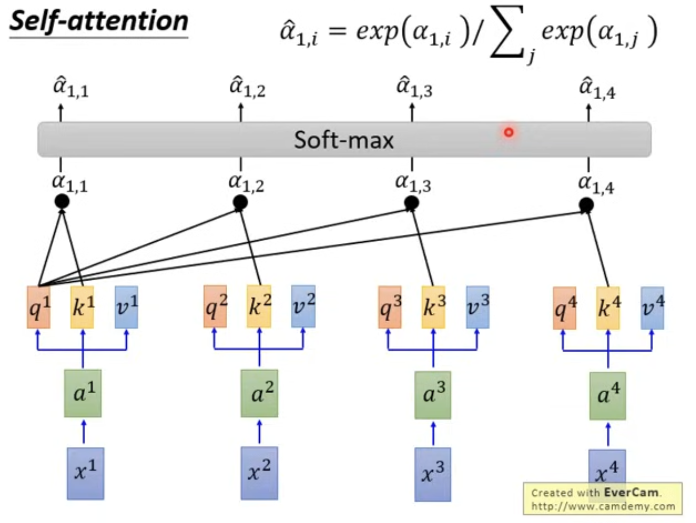
Step 3: 使用V 计算b
\(v\) 表示当前 Token 的特征表示，它和 \(k\) 具有一一对应关系。由前面 \(q, k\) 相乘得到的注意力权重加权得到：
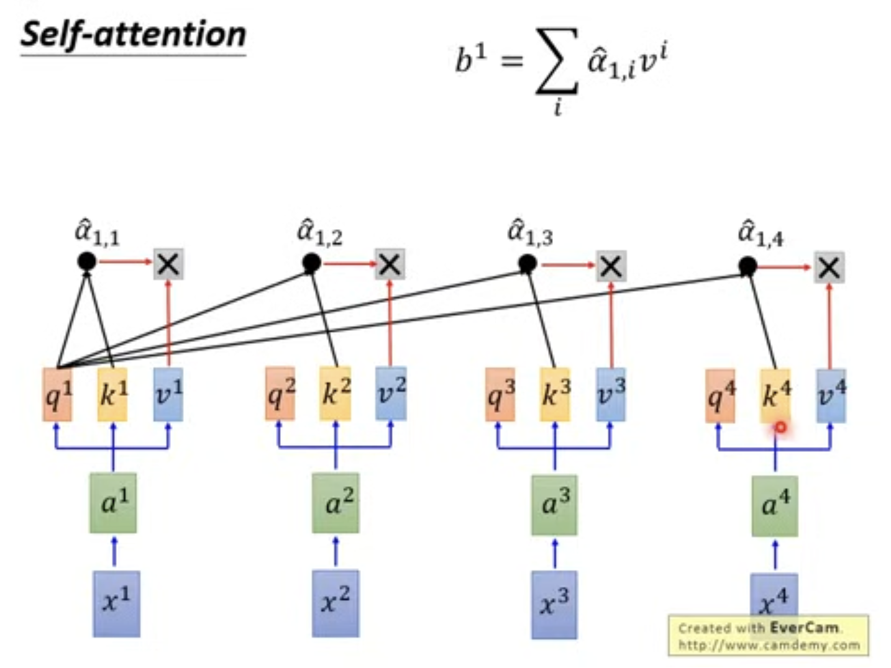
Step 4: 从整体看矩阵计算
对于第一个token的计算我们已经了解，那么多个token同时计算会是什么情况？假设我们这么表示：
- Input (embedding 后)：\(I\)
- Outout: \(O\)
- Softmax 前后的概率：\(A, \hat{A}\)
根据示意图很容易理解：
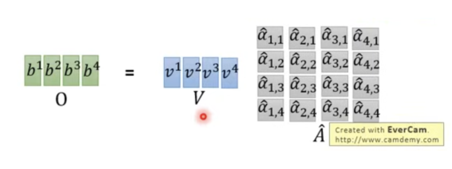
那么就有这个结论（反正就是矩阵乘法，可以加速)：
计算疑似youtube视频里的矩阵放反了，我手工调换了一下顺序
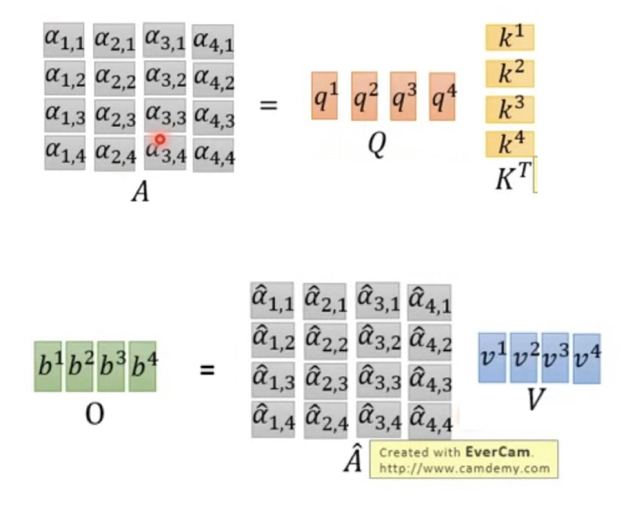
1.2 多头注意力机制 MHA
Multi-head Attention (MHA) 在设计层可以理解为，多个head各自计算一部分Embedding Feature。
- 注意力头的数量：\(H\)
- embedding时的维度：\(d_{model}\)
- 那么此时每个head的QKV维度为：\(d_k = d_{model}/H\)
在计算层面，也出现了变化。简言之就是：想要得到output \(b_i\)，先每个head分别计算出一个\(b_{i,h}\)，随后进行多头注意力输出的拼接。
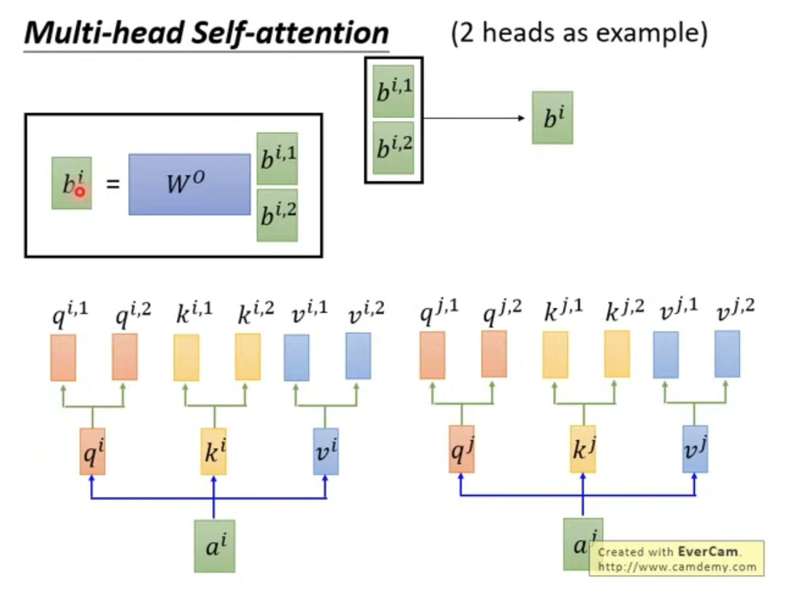
Step 1: 多头计算
在MHA中，多个注意力头是并行计算的，\(b_{i,h}\) 的计算就和上面普通的attention一样。
唯一值得注意的区别是，多头QKV 的 hidden layer出现了变化，因此：
- \(b_{i,h}\) 形状为 \([d_k = d_{model}/H]\)
- 而普通attention得到的 \(b_{i}\) 形状为 \([d_{model}]\)
Step 2: 多头拼接
首先进行简单的hidden layer拼接，\(H*[d_k] = [H*d_k] = [d_{model}]\)。这时回到了和正常attention一样维度的结果。
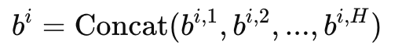
但是，多个注意力头计算出的结果可能彼此之间缺乏整合性。为了让模型能够更好地融合不同头的信息，我们需要 一个额外的线性变换进行信息融合。
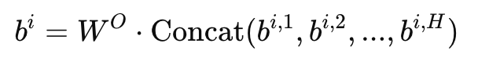
其中，\(W^O\) 是一个可训练的投影矩阵，形状为 \(W^O \in \mathbb{R}^{d_{\text{model}} \times d_{\text{model}}}\)。
1.4 层归一化 Layer Norm
Batch Norm 和 Layer Norm的选择使用也是一个常见的问题。
Norm操作的核心思想：
-
将数据转换为均值为 0，方差为 1 的标准正态分布（此处可先忽略\(\beta, \gamma, \epsilon\)）。
-
此处参考了pytorch的说明来辅助理解：
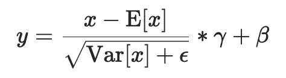
简单来说就是，对于一个 \((N,C,H,W)\) 的input（或 \((N,C,...)\)都可以 ）：
-
\(N\)：不同的sample，此处可理解为句子的长度
-
\(C\)：不同的channel，此处可理解为多维的embedding
Layer Norm：
-
以 \(N\) 为 index做norm
-
即：提取出 N = 1的所有element 做正则化，N = 2 的再做正则化，以此类推
-
此处就等于对每个词，提取出所有feature做一个正则化
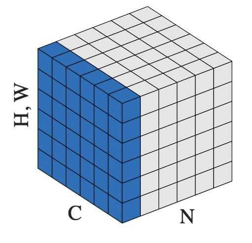
Batch Norm：
- 以 \(C\) 为 index做norm
- 即：提取出 C = 1的所有element 做正则化，C = 2 的再做正则化，以此类推
- 此处就等于对每个feature，提取所有词的这个feature做一次正则化
这样就很好理解了，对每个feature做norm（Batch Norm），相比对于一个token的所有feature做norm（Layer Norm）。Layer Norm更合理。
2. Transformer结构
2.1 输入
输入的每个单词 Token 都需要进行 Embedding 处理，先通过 Word Embedding 转换为向量表示，再加上 Position Encoding，以提供位置信息。
2.2 Encoder
Encoder 侧由多个 encoder block 组成。
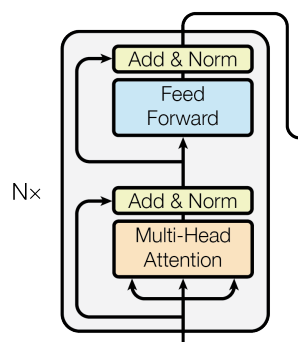
【Add & Norm】
是一种残差连接（Residual Connection），用于缓解深层网络的梯度消失问题。这种设计最早在 ResNet 中广泛应用。
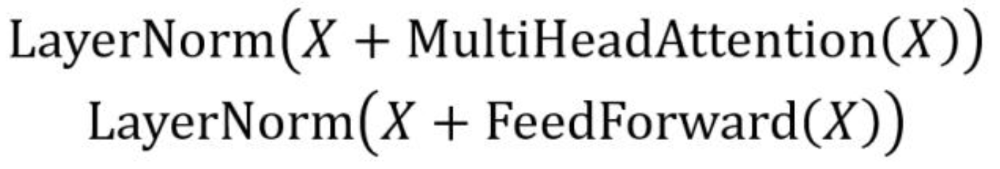
【Feed Forward Layer】
Feed Forward 层比较简单，就是一个两层全连接MLP，其中第一层的激活函数为 Relu，第二层不使用激活函数，先升维（一般为4x）后降维，对应的公式如下：
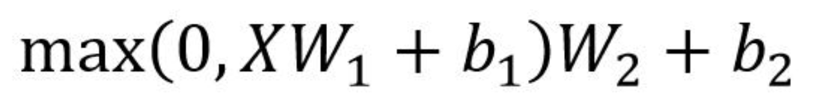
为什么需要FFN？提供非线性映射，增强局部表示能力，提升模型容量。
【Encoder Block 的整体结构
每个 Encoder Block 的输入是一个 word embedding 矩阵 \([seq_len, d_{model}]\)，多个 Block 叠加后，最终生成 编码信息矩阵 C，这一矩阵会被 Decoder 进一步利用。
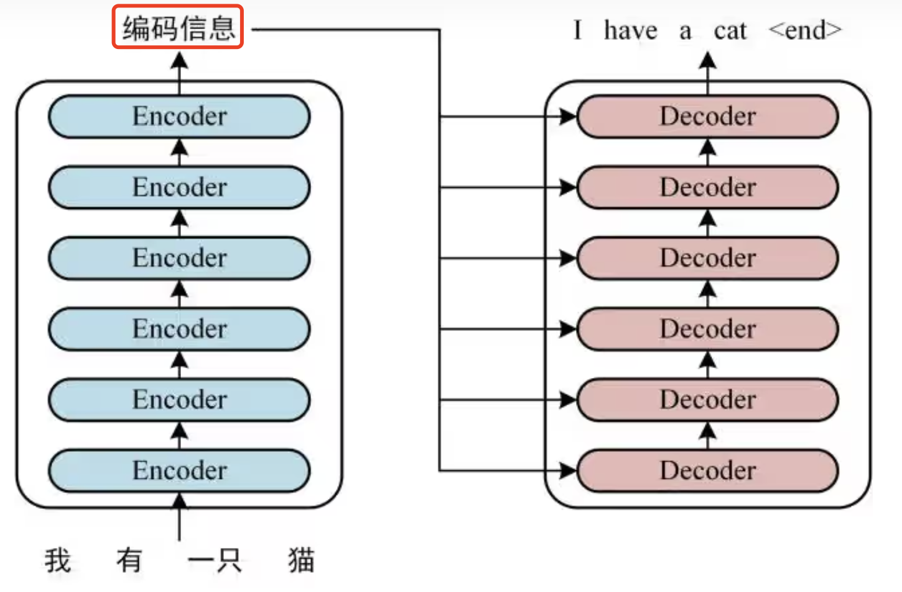
2.3 Decoder
Decoder 侧也由多个 decoder block 组成，但它会利用 Encoder侧最后生成的编码信息矩阵。
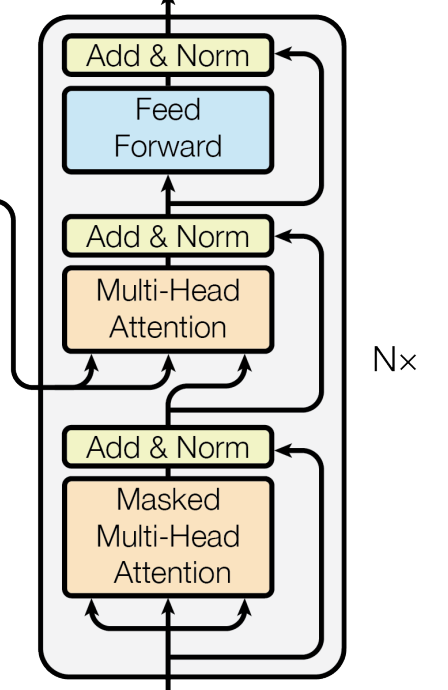
【第一个MHA】（Masked Self-Attention）
Decoder 的第一个 Multi-Head Attention 采用了 Mask 机制，因为 翻译是顺序生成的，每个位置不能看到未来的信息。
可以理解为加了一个处理：使用下 三角矩阵 进行了Mask，使得未来 Token 的注意力被屏蔽。
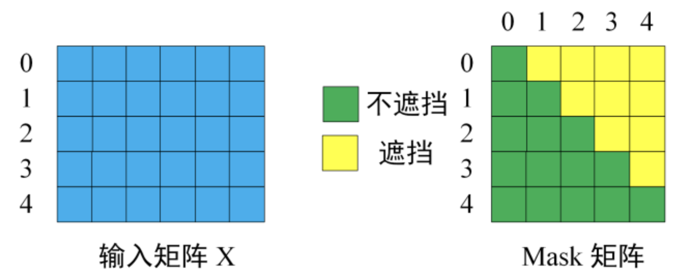
具体mask体现在哪里呢？顺序是：QK计算 -> Mask -> Softmax -> V计算
- QK计算
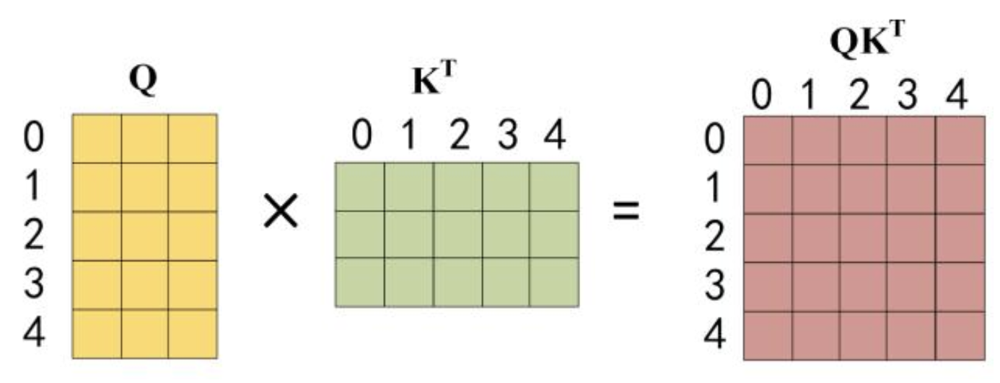
- Mask
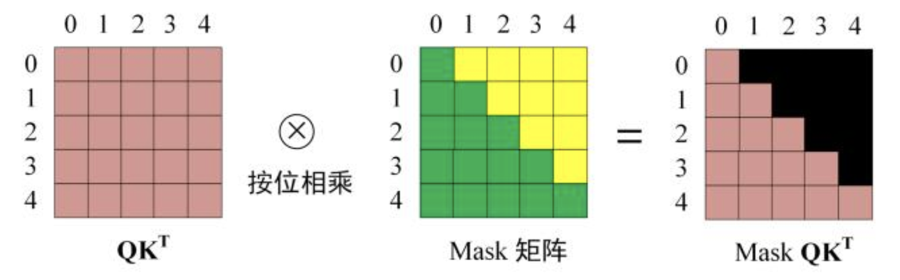
-
Softmax
-
V计算
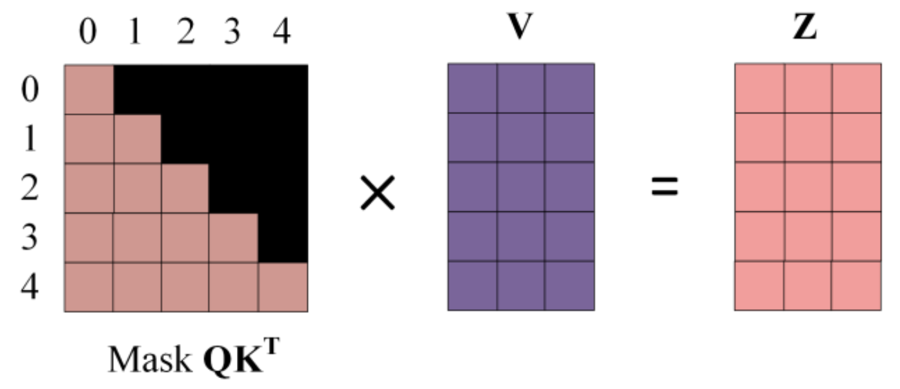
【第二个MHA】
第二个MHA的主要区别是，Self-Attention 的 K, V 矩阵不是使用 上一个 Decoder block 的输出计算的，而是使用 Encoder 的编码信息矩阵 C 计算的。并且这里不需要mask。
为什么这样做？好处是在 Decoder 的时候，每一位单词都可以利用到 Encoder 侧所有单词的信息。
当然，第一个 MHA 的信息没有丢失，它会在 Add & Norm 阶段被整合。
2.4 Linear + Softmax + 输出
Decoder 侧 最终的目标：预测下一个单词。
-
单词从哪里来？词汇表。也就是说我们要从词汇表中找出一个最可能的词作为输出。
-
但是 decoder block 目前的输出是一个shape为 \([L×d_{model}]\) 的矩阵。
所以最后还有两个步骤：
-
使用 Linear 层映射到词汇表维度
-
使用 Softmax 计算概率分布，选取最可能的单词
【Linear Layer】
假设：
- 词汇表大小（Vocabulary Size）：\(V=30,000\)（即 Transformer 需要在 30,000 个单词中选择一个）
- 隐藏层维度（Embedding 维度）：\(d_{model}=512\)
显然现在的embedding feature数目不足以对应到词汇表的大小，所以需要一个线性变换层（Fully Connected Layer），将 \(d_{model}\) 维度转化为词汇表大小 \(V\)。使得 Transformer Decoder 生成的最终隐藏状态\(O\)对应到词汇表：
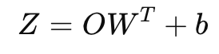
- \(O\) 的形状：\(R^{L×d_{model}}\)
- \(W\) 的形状：\(R^{V×d_{model}}\)
- \(b\) 的形状：\(R^{L}\)
- \(Z\) 的形状：\(R^{L×V}\)
【Softmax】（概率计算）
线性层输出 \(Z\) 在经过线性层后还是未归一化的分数，需要通过 Softmax 转换为概率分布。
最终，Decoder 选择概率最高的单词作为输出，不断迭代，直到生成结束标记（<EOS>）。
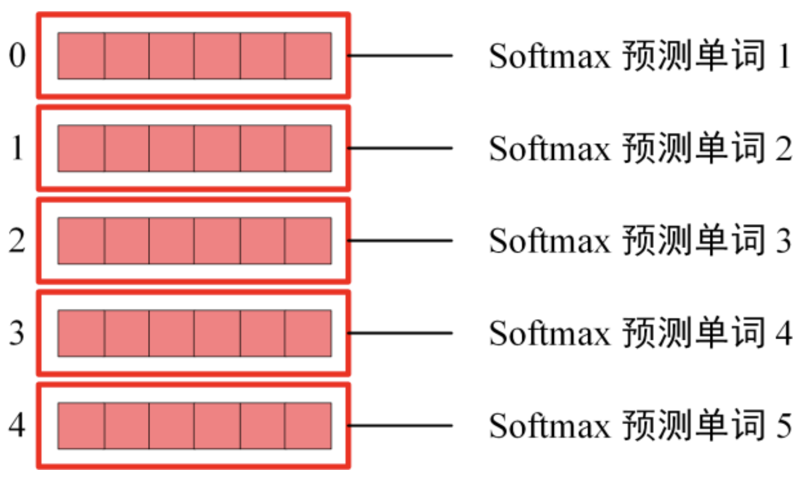
3. 一些衍生知识点
3.1 训练和推理
【训练时】
-
输入序列：
["I", "like", "apples"] -
目标序列（需要预测的单词）：
["like", "apples", "<END>"]
在训练过程中，模型可以 并行计算，一次性输入整个句子作为 Input，随后使用 Mask 机制 模拟未知后续序列的情况。
【推理时】
推理时，模型没有完整的目标序列，只能 逐步预测下一个单词：
-
给定
"I"，模型预测"like"。 -
用
"I like"作为输入，模型预测"apples"。 -
用
"I like apples"作为输入，模型预测<END>。
这种 自回归（Auto-Regressive）生成方式 会导致推理速度较慢，因为每个新 Token 需要依赖之前的预测结果。
因此，为了提升推理效率，衍生出一系列推理加速方法。最主流的方法是 KV Cache（键值缓存），因为它 不会影响生成质量，且可以大幅加速推理（适用于 ChatGPT / GPT-4 / LLaMA）。
3.2 Encoder/Decoder Only
三种主流的架构：encoder-only，encoder-decoder，decoder-only
- Encoder-Only（以 BERT 为代表），擅长理解任务，但生成能力天生不足
- Encoder-Decoder（以 T5 和 BART 为代表），适用于需要输入输出匹配的任务（如翻译）。
- Decoder-Only（以 GPT 系列 为代表），目前大模型的主流架构。
为何现在的大模型大部分是Decoder only结构？
- Encoder侧的低秩问题
- 低秩：针对encoder侧得到的编码信息矩阵，认为模型学习到的特征可能高度相关，表达能力降低。
- 原因：在 Encoder 侧，每个 token 都可以关注整个输入序列，这意味着所有 token 共享相同的 Key/Value，这可能导致注意力分布趋于相似，最终形成一个低秩的表示。
- Decoder-Only 更适合 Zero-Shot
- Zero-Shot：零样本，不给reference sample（对应的概念还有one-shot / few-shot）
- 原因：Decoder-Only 结构天然支持 Zero-Shot，因为它没有参考样本（Reference Sample），而是直接基于输入预测输出。
- KV-Cache 优势，提升推理效率
- Decoder-only 支持一直复用 KV-Cache，对多轮对话更友好。
- 原因：每个 Token 的表示之和它之前的输入有关，而 Encoder-Decoder就难以做到。
3.3 LLama
LLaMA是目前为止，效果最好的开源 LLM 之一。它采用 Decoder-Only 结构，并对 Transformer 进行了关键改进，以提升训练稳定性、推理速度和长文本处理能力。
LLaMA 的核心优化点：
-
RMS Norm 归一化：Layer Norm 替换为 RMS Norm，去掉均值归一化，减少计算量。
-
SwiGLU 激活函数：在MLP中使用SwiGLU替代 ReLU，使梯度更平滑，提高训练效果。
-
RoPE 旋转位置编码：增强相对位置感知能力，提高长文本建模能力。
- 与标准 Decoder-Only Transformer 的区别：
- Norm 位置不同：LLaMA 采用 Pre-Norm（Norm -> Add），而不是标准 Transformer 的 Post-Norm（Add -> Norm）。
- 位置编码位置不同：RoPE 直接作用于 Multi-Head Attention（MHA），而不是在输入时加到 Embedding 上。
- Decoder 侧的特殊处理：在最终输出时，LLaMA 先进行归一化（Norm），再投影到词汇表，而标准 Transformer 是 Projection -> Softmax。
【Pre-Norm RMS】
传统 Transformer 采用 Post-Norm（对输出进行归一化），但为了提高训练的稳定性， LLaMA 改用 Pre-Norm（对输入进行归一化）。
同时，LLaMA使用 RMS Norm（Root Mean Square layer normalization） 来替代Layer Norm。
主要区别：去掉了均值归一化部分。作者认为这种方式有助于减少计算量，可以减少约 7%∼64% 的计算时间。
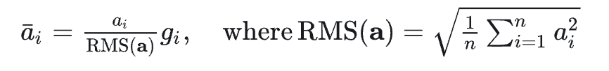
【激活函数SwiGLU】
LLaMA 使用 SwiGLU 替代 ReLU 作为激活函数。论文《Swish: a Self-Gated Activation Function》提出了Swish，SwiGLU 是其增强版。相比 ReLU，SwiGLU 梯度更平滑，可以改善训练稳定性。

【 旋转位置编码RoPE】
RoPE 的 核心思想 是”通过绝对位置编码的方式实现相对位置编码”。
优点：具备了绝对位置编码的方便性，同时可以表示不同 token 之间的相对位置关系，适配更长文本。
不同于原始 Transformers 论文中，将 pos embedding 和 token embedding 进行相加，RoPE 是将位置编码和 query （或者 key） 进行相乘。具体如下：

同时值得注意的是，RoPE 在LLaMa中位于MHA中。
4. 手写Transformer
了解了以上内容，现在我们来手写一个Transformer。
为了能够在面试中快速实现，我们采用一个极简的 LLaMA 版实现（这样我们只需要实现 Decoder 部分）。特别感谢我 Hugging Face 的朋友提供的指导！
LLaMA 一个 Decoder Block 的极简结构如下——Input → RMSNorm → Attention →（残差）→ RMSNorm → MLP →（残差），整个网络由若干个这样的 Block 堆叠而成：
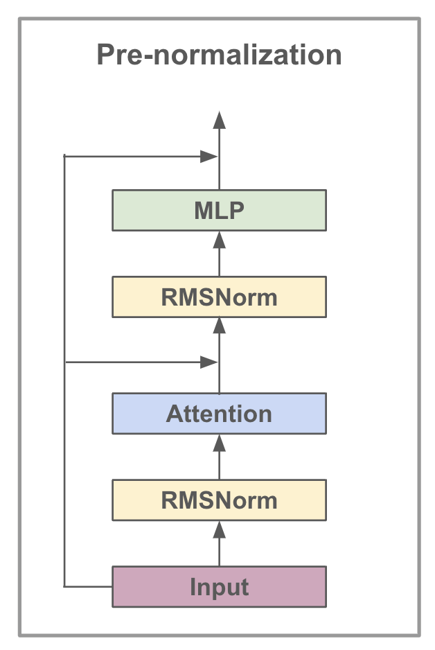
LLaMA 版的 Transformer 主要包含以下几个核心模块（从重要的部分开始）。
当然，实际实现中还有一些模块，理论上可以手动编写，但为了简化，我们直接调用相关库函数，例如：
- RoPE编码：
rotary_embedding_torch.RotaryEmbedding - RMSNorm归一化：
x_transformers.RMSNorm
4.1 Multi-Head Attention (MHA) 实现
手写 MHA（Multi-Head Attention）是 Transformer 相关面试中常见的考点。
LLaMA 版 MHA 与标准 MHA 的主要区别在于：
- 普通 MHA：位置编码（Position Embedding）通常在 Encoder 开头处理。
- LLaMA MHA：采用 RoPE（Rotary Embedding），将相对位置编码集成到 MHA 计算中。
如果想实现普通 MHA，只需删除与 RoPE 相关的部分（共3句）。
import torch
import torch.nn as nn
import torch.nn.functional as F
from rotary_embedding_torch import RotaryEmbedding # 因为我不想手写RoPE
class MultiHeadAttention(nn.Module):
def __init__(self, hidden_size, num_heads):
super().__init__()
self.num_heads = num_heads
self.head_dim = hidden_size // num_heads # 每个头的维度
# 定义投影的线性变换层
self.q_proj = nn.Linear(hidden_size, hidden_size, bias=False)
self.k_proj = nn.Linear(hidden_size, hidden_size, bias=False)
self.v_proj = nn.Linear(hidden_size, hidden_size, bias=False)
self.out_proj = nn.Linear(hidden_size, hidden_size, bias=False)
self.rope = RotaryEmbedding(dim=self.head_dim) # 直接使用 RoPE - LLaMa
def forward(self, x, mask=None):
B, T, _ = x.shape # batch_size, token_len, hidden_size
# 计算 Q, K, V
q = self.q_proj(x) # [batch_size, token_len, hidden_size]
k = self.k_proj(x)
v = self.v_proj(x)
# 拆分多头
q = q.view(B, T, self.num_heads, self.head_dim).transpose(1, 2) # [B, num_heads, T, head_dim]
k = k.view(B, T, self.num_heads, self.head_dim).transpose(1, 2) # [B, num_heads, T, head_dim]
v = v.view(B, T, self.num_heads, self.head_dim).transpose(1, 2) # [B, num_heads, T, head_dim]
# 直接应用 RoPE - LLaMa
q = self.rope(q)[:, :, :, :, 0]
k = self.rope(k)[:, :, :, :, 0]
# QK计算，使用BMM，只对后两个维度做乘法
attn_scores = (q @ k.transpose(-2, -1)) / (self.head_dim ** 0.5) # [B, num_heads, T, T]
# 应用 mask（可选）
if mask is not None:
mask = mask.unsqueeze(1) # [B, T, T]扩展到 [B, 1, T, T]，自动broadcast到 [B, num_heads, T, T]
attn_scores = attn_scores.masked_fill(mask == 0, float('-inf'))
# softmax / V计算
attn_weights = F.softmax(attn_scores, dim=-1) # [B, num_heads, T, T]
attn_output = attn_weights @ v # [B, num_heads, T, head_dim]
# 合并多头
# -> [B, T, num_heads, head_dim] -> 确保存储方式改变 -> 自动合并reshape -> [B, T, hidden_size]
attn_output = attn_output.transpose(1, 2).contiguous().view(B, T, -1)
return self.out_proj(attn_output)
4.2 Feed Forward (MLP) 的实现
标准 Transformer 中，FFN 采用 线性升维-降维 结构（hidden_dim 通常设为 4 * embedding_dim）。
但LLama版使用 SwiGLU 替代了 ReLU，SwiGLU 可以调用 SiLU 函数实现，它们的关系如下：
SiLU（Swish Linear Unit）的形式
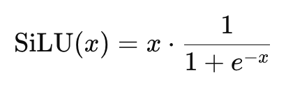
SwiGLU（Swish-Gated Linear Unit）
SwiGLU 是 GLU（Gated Linear Unit）的变体，由 SiLU + gating 机制 组成其定义如下：
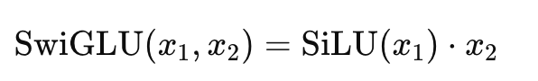
import torch
import torch.nn as nn
import torch.nn.functional as F
"""
class SimpleMLP(nn.Module):
def __init__(self, dim, hidden_dim=None):
super().__init__()
hidden_dim = hidden_dim or 4 * dim
self.fc1 = nn.Linear(dim, hidden_dim, bias=False) # hidden layer
self.fc2 = nn.Linear(hidden_dim, dim, bias=False) # output layer
def forward(self, x):
x = F.relu(self.fc1(x)) # ReLU
x = self.fc2(x) # output
return x
"""
class MLP(nn.Module):
def __init__(self, dim, hidden_dim=None):
super().__init__()
hidden_dim = hidden_dim or 4 * dim
self.gate_proj = nn.Linear(dim, hidden_dim, bias=False) # gate
self.up_proj = nn.Linear(dim, hidden_dim, bias=False) # up
self.out_proj = nn.Linear(hidden_dim, dim, bias=False) # 输出层
def forward(self, x):
x1 = F.silu(self.gate_proj(x)) # gate
x2 = self.up_proj(x) # up
x = x1 * x2 # SwiGLU
return self.out_proj(x)
4.3 Decoder侧的实现
LLaMA 的 Decoder 侧与传统 Transformer 的主要区别：
- 传统Transofrmer：Add -> Norm
- LLaMa:Norm ->Add。
class DecoderBlock(nn.Module):
# Attention -> RMSNorm -> Residual -> MLP -> RMSNorm -> Residual
def __init__(self, dim=512, num_heads=8):
super().__init__()
self.attn = MultiHeadAttention(dim, num_heads)
self.ffn = MLP(dim)
self.norm1 = RMSNorm(dim)
self.norm2 = RMSNorm(dim)
def forward(self, x, mask=None):
x = x + self.attn(self.norm1(x), mask)
x = x + self.ffn(self.norm2(x))
return x
4.6 LLama的整体实现
标准 Transformer（如 GPT、BERT）采用 final_proj -> LayerNorm 结构。
LLaMA 采用 RMSNorm -> final_proj，先归一化，再投影。
class MiniLlama(nn.Module):
def __init__(self, vocab_size=32000, dim=512, depth=8, num_heads=8):
super().__init__()
self.embed = nn.Embedding(vocab_size, dim)
self.blocks = nn.ModuleList([DecoderBlock(dim, num_heads) for _ in range(depth)])
self.norm = RMSNorm(dim)
self.final_proj = nn.Linear(dim, vocab_size, bias=False)
def forward(self, x, mask=None):
# embedding -> decoder blocks -> norm -> projection
x = self.embed(x)
for block in self.blocks:
x = block(x, mask)
x = self.norm(x) # 先做 RMSNorm
return self.final_proj(x)
测试实现
可以运行测试代码，确保 MiniLLaMA 的输出形状正确！我写了一个test函数，你可以下载 ipynb 文件（或在 Colab 上）直接运行。
好了！今天的内容就到这里，下期再见👋